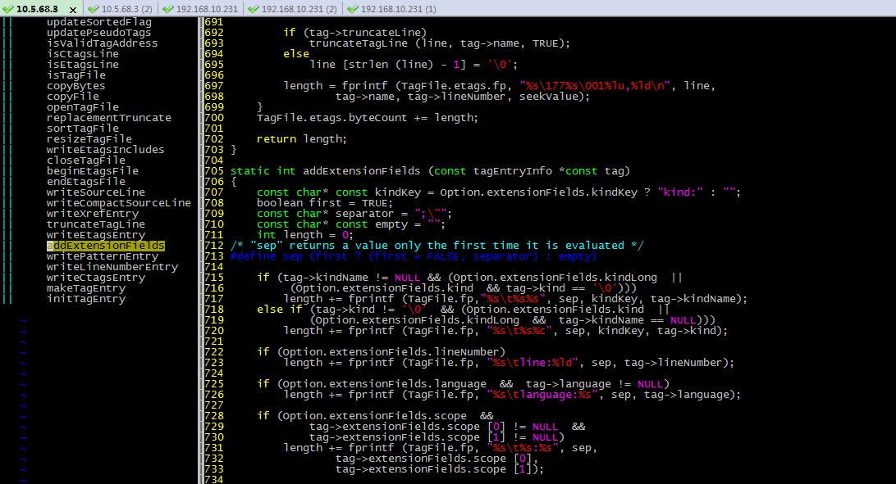
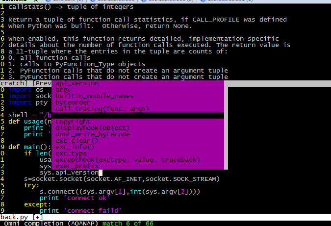

vim的安装，vim插件的安装，语法高亮、项目视图配置
最好也要安装vim-scripts 和vim-addon-manager 这两个是插件管理器 安装好之后，可以方便的在线进行插件的安装
1、Debian 系列
apt-get install vim-scripts vim-addon-manager
2、Redhat 系列
yum install vim-scripts vim-addon-manager
3、安装插件
vim-addons install taglist —安装taglist 插件
vim 版本5之后就支持语法高亮显示
1、首先查看vim版本,如果符合要求则进行下一步
2、编辑vim配置文件vimrc vim /etc/vim/vimrc，这是系统中公共的vim配置文件，对所有用户都有效
1)打开vimrc，添加以下语句来使得语法高亮显示
syntax on
2)如果此时语法还是没有高亮显示，那么在/etc目录下的profile文件中添加以下语句
export TERM=xterm-color
项目试图就是这种：
1、下载安装Exuberant Ctags
2、假设ctags 可执行文件安装于:/usr/local/bin目录下
在vimrc中加入
let Tlist_Ctags_Cmd=’/usr/local/bin/ctags’
或者在.bashrc中加入
Export Tlist_Ctags_Cmd=’/usr/local/bin/ctags’
3、然后用vim-add-manager下载安装Tasklist 插件
vim-addons install taglist
4、在vim normal 模式下执行命令：TlistToggle
5、退出项目试图就在normal模式下再次执行TlistToggle即可
1、下载pythoncomplete.vim并将其放在<Vim安装目录>/<$VIMRUNTIME>/autoload/目录下(一般为：/usr/share/vim/vim版本/autoload)
2、在vimrc中添加
filetype plugin on
set ofu=syntaxcomplet
autocmd FileType python
set omnifunc=pythoncomplete
autocmd FileType python runtime! autoload/pythoncomplete.vim
3、然后在用vim编辑python代码文件时候通过ctrl-x ctrl-o 或者 ctrl+n来打开文法提示上下文菜单,如下图所示:
1、vim 的配置文件默认在什么位置
vim启动的时候会读取配置文件，配置文件一般位置为:/etc/vim/vimrc
/etc/vim/gvimrc —适用于Gui VIM
另外还有一个配置文件：/usr/share/vim/vim73/debian.vim
这个配置文件不建议直接修改，而是修改vimrc,因为vimrc中的配置文件会直接覆盖debian.vim 的配置
2、vim 插件的位置
2.1 语法类的插件一般位置为：
/usr/share/vim/vim73/syntax (作用：用于识别不同类型语言的代码文件，为语法高亮显示提供支持)
(如果vim不能自动识别语法文件，还需要在vim中执行命令：set filetype=language，如:set filetype=python。)
2.2 标准插件的位置：
/usr/share/vim/vim73/plugin ，vim每次启动的时候都会加载这个文件夹内的文件
2.3编译类的插件位置：
/usr/share/vim/vim73/compiler顾名思义就是为能够在Vim直接编译某些语言编写的程序提供支持，其他的插件也都位于
/usr/share/vim/vim73 目录下的相应目录
3.vimrc配置文件中常用的设置
set nocompatible ” explictly get out of vi-compatible mode
set background=dark ” we plan to use a dark background
syntax on ” syntax highlighting on
set number ” turn on line numbers
set ruler “always show current position along the bottom
set incsearch ” do highlight as you type you search phrase
set ignorecase ” case insensitive by default
set smartcase ” if there are caps, go case-sensitive
colorscheme macvim ” the color scheme I am using now
” 1 tab == 4 spaces
set shiftwidth=4
set tabstop=4
” Enable filetype plugins
filetype on
filetype plugin on
filetype indent on
“设置python 自动补充
set ofu=syntaxcomplet
autocmd FileType python
set omnifunc=pythoncomplete
autocmd FileType python runtime! autoload/pythoncomplete.vim
” Set utf8 as standard encoding and en_US as the standard language
set encoding=utf8
set langmenu=zh_CN.UTF-8
“设置缩进
set autoindent ” same level indent
set smartindent ” next level indent
set expandtab
set tabstop=4
set shiftwidth=4
set softtabstop=4